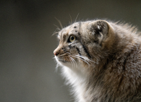

О компании
Студия Pallas cat была создана с целью уместить на один сайт все - все материалы, что человек изучает на JS, но сделать это так, чтобы картинка нашего сайта не пострадала, чтобы мы могли посмотреть на результаты нашей практики и сказать: “да, я я это сделал и сделал это красиво”
Введение
На данной с транице пользователю дана возможность по клику на одну из кнопок открыть модальное окно с соответствующим содержимым. Сайт будет усложняться по мере погружению в Javascript.
Инструкция. Шаги
-
1.
Видим кнопку, например, fetch. По клику на эту кнопку открывается модальное окно
-
2.
В модальном окне вытаскиваем данные, согласно поставленной задаче
-
3.
Каждое модальное окно должно быть способным закрываться и открываться по клику
-
4.
Каждое модальное окно должно быть способным закрываться и открываться по клику
Оценка
Оценка производится в соотвествии с соблюдением разметки, качества использованных тегов ( семантически ), качеству написания js кода и количеству выполненых заданий
